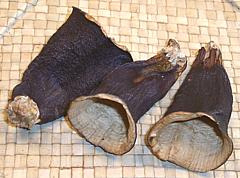

SAFARI
Users
- General & History -
- "Male" & "Female" Eggplants - You've got to be kidding?
- Working with Eggplants - Peeling, Stuffing, Cooking, etc.
- Varieties - Relatives called "Eggplant"
- Varieties - Eggplants (Solanum melongena)
- Health Considerations
- Links
General & History
Eggplants are thought native to Southern India and Sri Lanka and have been cultivated since prehistoric times. They were probably brought to Europe by Arabs around 1500 CE. Europeans at first thought them poisonous since all their native nightshades were, but they were soon adopted into the cuisines of the Mediterranean region.
Eggplants are now grown worldwide and are available in many varieties and sizes (as all nightshades are). More varieties are grown in India than anywhere else, and while the common "Indian eggplant" well known in the U.S. weighs just a couple ounces, varieties as large as our globe eggplant are grown there.
Varieties - Relatives Called "Eggplant"
African / Vietnamese Eggplants
[Gboma (Africa); Solanum macrocarpon (cultivated), Solanum dasyphyllum (wild)]
Technically not an eggplant, but very closely related, this nightshade
originated in West Africa. It has been introduced into Central and East
Africa, the Caribbean, South America and parts of Southeast Asia.
There are many cultivars and land races of this species which vary
considerably in fruit size. The photo specimen has very long calyx lobes
but some have medium or short lobes. Unripe the fruit may be green,
white, or purple, but generally ripens to yellow or yellow-brown.They
are most commonly harvested unripe and eaten raw or cooked, though
they are fairly bitter.
Details and Cooking.
Photo by Vinayaraj distributed under license Creative
Commons
Attribution-ShareAlike v3.0 Unported.
African / Ethiopian Eggplants

[Bitter Tomato, Mock Tomato; Garden Eggs (Nigeria); Diakhato, Jaxatu (Wolof (pronounced the same)); Aubergine Africaine (French); Khamen Akhaba (Manipuri, India); Samtawk (Mizoram, India); Solanum aethiopicum]
Various cultivars of these plants are grown in Asia and tropical Africa. As with other nightshades, there are many varieties. The photo specimens are from northeastern India, but some varieties, particularly in Africa, look like tiny pumpkins with very deep sutures, and ripen to orange or red. The fruit is usually picked unripe before the skin thickens, and is eaten both raw and cooked. It can be sweet or bitter depending on cultivar. Young leaves are cooked as nutritous greens.
Fruits of these plants are particularly popular in Manipur and Mizoram
in the extreme northeast of India. In Nigeria the fruits are used
similarly to tomatoes to make a sauce. They are also used in curries in
Thailand and Vietnam. A fair number are grown in Brazil for the African
communities there, and a few are grown in Italy, probably brought back
from Ethiopia by Italian soldiers.
Details and Cooking.
Photo by Tabish q at English Wikipedia distributed under
license Creative Commons
Attribution-ShareAlike v3.0 Unported, attribution required.
Pea Eggplant
[Thai Pea Eggplant; Turkey Berry, Susumber (Jamaica); Sundaikkai (Tamil); Makhua phuang (Thai); Thibbatu (Sinhala); Solanum torvum]
This close relative of the eggplant, producing fruit about 0.4 inch
diameter, is native to the Americas, from Florida through the Caribbean
and from Mexico south into Brazil. It has been naturalized throughout
the tropics and can be a serious pest in some environments (the plants
grow large and have lots of thorns). The berries grow in clusters, and
are usually picked green, but can ripen to yellow and bright red.
Details and Cooking.
Photo by Parvathisri distributed under license Creative
Commons
Attribution-ShareAlike v3.0 Unported.
Thorn Apple
[Bitter Apple; Solanum incanum]
This shrub is the plant from which the domesticated Eggplant was
developed. It is native to Sub-Saharan Africa, and South Asia from Arabia
east to India. The fruit is 1 to 1.4 inches diameter and ripens to
yellow or brown. All parts of the plant are toxic, but in West Africa
cultivars have been developed that provide larger, edible fruit and
edible leaves. Within its range this plant has a large number of
medicinal uses, but it is also used as a vegetable rennet in making
cheese. The photo specimen was photographed in the mountans of
Oman, in the far southeast of the Arabian Peninsula.
Photo by Nepenthes distributed under license Creative
Commons
Attribution-ShareAlike v3.0 Unported.
Varieties - True Eggplants
Chinese Eggplant
These elongated eggplants are easily recognizable by their light purple color. In Southern California they are available second only to the globe eggplant. They can be used interchangeably with Italian, Japanese and Philippine eggplants and are an imperfect but generally satisfactory substitute for Indian eggplants. The longest photo specimen was 15-1/2 inches long, 2 inches diameter and weighed about 11 ounces. Most are less elongated, the front one being a more typical shape.
Eggplant Skins
 These conical skins are used for stuffing in Turkey and Lebanon and are generally served as appetizers. Skins are usually sold strung on a piece of string in markets serving a Near Eastern community. Hard as old leather, they need to be soaked at least overnight before you can use them for anything.
Globe Eggplant
The standard supermarket eggplant, globes vary greatly in size and regularity of shape. They may be perfectly pear shaped or quite lopsided but are always a deep purple color. The photo specimen was 8 inches long, 5-1/2 inches diameter and weighed 2-1/4 pounds, about an average size.
Some writers say these come in Male and Female versions, a biological
absurdity. For details see
"Male" & "Female" Eggplants.
Indian Eggplant
These small egg shaped eggplants are now very common in California produce markets because of the significant Indian population here (and probably in other centers of technology). They come in two varieties, purple and variegated with the purple most common. They are almost never peeled.
This is the eggplant to presume in Indian and Burmese recipes unless
the instructions make it clear elongated or globe eggplants are intended.
Indian eggplants vary somewhat in size. The largest photo specimen was
3-3/4 inches long, 2-3/8 inches diameter and weighing 4-1/8 ounces, a bit
above average. The smallest in the batch (not shown) was 1-7/8 inches
diameter and weighed just 1-1/8 ounces.
Italian Eggplant
These dark purple eggplants appear very similar to Japanese eggplant but are invariably a lot shorter. They are the second most available eggplant nation-wide after the globe. The center photo specimen was 7-1/2 inches long, 1-3/4 inches diameter and weighed just under 5 ounces.
Japanese Eggplant
These very elongated eggplants are smaller than the Chinese and are a very dark purple, sometimes almost black. You can tell them from the similar Italian eggplants because the stem end is purple, while on Italians it is green. These eggplants have a very thin skin which makes them desirable for stews, curries and the like.They vary greatly in size but are typically about 8 inches long, 1-1/2 inches diameter and weigh 5 ounces. These are widely available in Southern California produce markets but are somewhat seasonal.
Mediterranean Sweet Eggplant
I have no idea if they actually grow these in the Mediterranean region,
but Med. Sweet is how they're marketed in California. They may actually
be related to a sweet Italian eggplant which is of a variegated white
and purple color and more blocky in shape. The degree of sweetness over
regular eggplants is noticeable but not great. These were 4-1/4 inch
diameter spheres weighing just about 1 pound each. They are not common
and are available only seasonally.
Philippine Eggplant
These elongated eggplants are similar in shape to the Japanese and Chinese eggplants but distinguished from them by the mix of purple and green color. They vary quite a bit in size with the largest in the photo 9-1/2 inches long, 2-7/8 inches diameter and weighing 14 ounces. They are available in most markets that serve a Philippine community (generally near major hospital and health care centers).
Thai Eggplant / Nandyala Eggplant
[Kermit Eggplant, Green Eggplant; Makua, Makhuea pro (Thai); Poluru Vankayalu (India - Telugu); Solanum melongena]
These unique, easy to identify eggplants are now widely available in California and the Southwest. They stay noticeably firmer than other eggplants when cooked so can take longer cooking and more abuse. They are never peeled. They are usually between 1-1/2 and 2-1/4 inches diameter and weigh up to 2-3/4 ounces. When cut, the seeds should be very light beige (the photo shows the darkest acceptable). If they are dark the eggplant is old and will be bitter.
This is also the predominant variety grown in Andhra Pradesh and
Tamil Nadu in southeastern India, The Indian version tends to be a bit
more elongated than the Thai, but the coloration and cooking properties
are the same.
Details and Cooking
Vietnamese Pickled Eggplant
[Ca Phao, Ca muoi (Viet)]
These are apparently ca trang (white eggplant) judging from the amount of
seeds. Another, ca nghe (yellow eggplant is also used for pickles but has
relatively fewer seeds. Very crunchy with a light eggplant flavor, they
are about 1 inch in diameter. In Vietnam, pickled eggplants of this sort
are considered an indispensable accompaniment for soups.
White Eggplant
These are likely where the name "eggplant" came from, as they are often egg shaped, varying from chicken egg size to duck egg size and on to goose egg size - but they also come in elongated shapes, like the photo specimens.
White eggplants have tough skins which need to be peeled (unless
you're stuffing them) but the flesh is a little more mild than purple
eggplants. The photo specimen in the center was 7-1/4 inches long, 1-7/8
inches diameter and weighed 5-3/4 ounces. Availability is erratic, both
for white eggplants at all and for particular shapes - you just have to
buy them when you can get them. Here in Los Angeles I saw these
occasionally a few years ago, but not at all for a couple of years now
(2013).
Health Considerations
Eggplants are a good source of dietary fiber and contain appreciable amounts of potassium, manganese, copper, vitamin B1, B6 and foliate.
Scientific studies have concentrated on the high content of important antioxidants and free radical scavengers. Eggplants are considered very good for both anti-cancer and anti-cholesterol considerations.
Eggplants contain more oxalate than other nightshades and most other vegetables. Oxalates can affect persons with pre-existing kidney and gall bladder problems. While oxalates are known to inhibit calcium absorption this effect is very small and foods containing oxalates generally provide more calcium to the diet than they inhibit.
Eggplants contain an unusually high amount of nicotine alkaloids, but you would have to eat at least 20 pounds of eggplant to achieve the amount from smoking one cigarette.
Eggplants prepared certain ways can cause a very light but noticeable stinging sensation in the mouth. This is normal and harmless.
Claims have been made that arthritis symptoms were relieved by removal of all nightshades (eggplant, tomatoes, potatoes, etc.) from the diet, but these claims have not been confirmed by any controlled study.
Much anti-nightshade propaganda originates from the Michio Kushi Macrobiotics movement - much more religion than science. They claim all nightshades (eggplants, tomatoes, potatoes, chilis, etc.) are highly toxic and will ruin your health in short order. If there was any truth to that I'd have died decades ago.
Populations with heavy eggplant consumption, particularly India, do not appear to be suffering population decline nor any other ailment that can be attributed to eggplants.
Links
- E1 - Eggplants, Nutrition & Health - George Mateljan Foundation the world's healthiest foods.